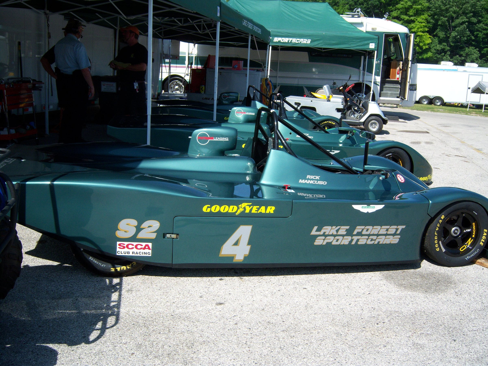
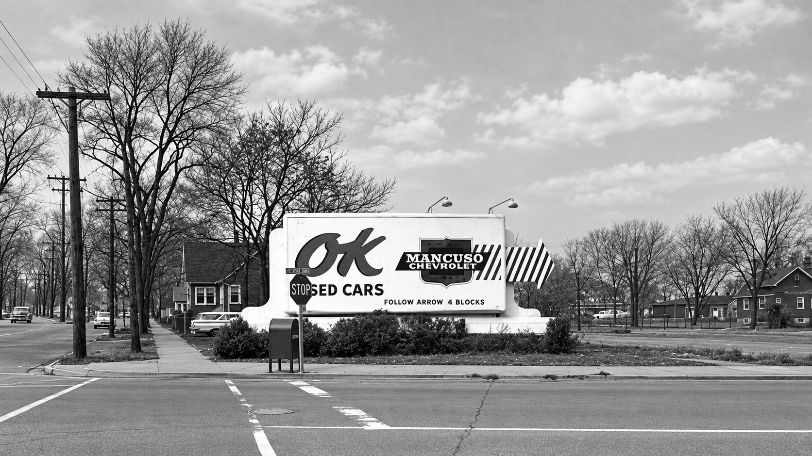
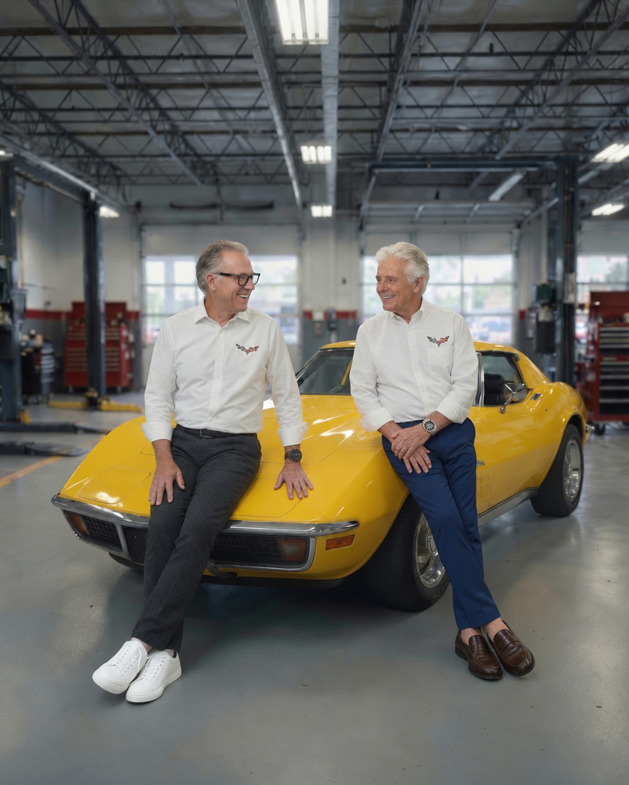
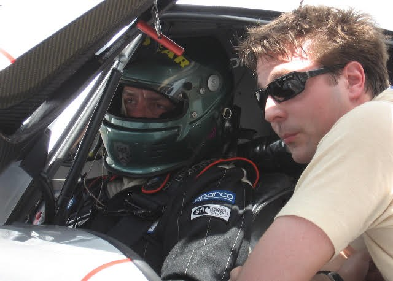
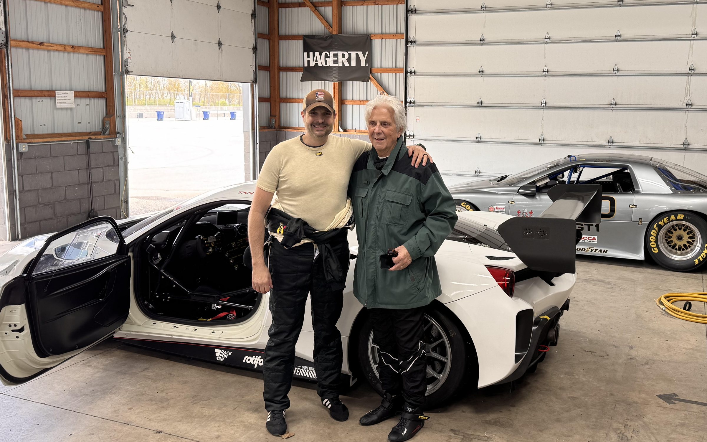
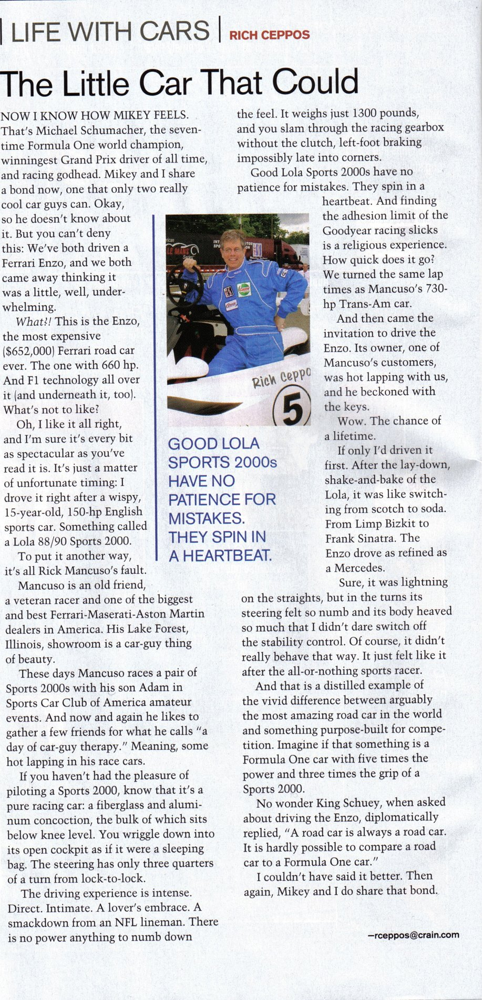

I
Benjamin
Pioneer dealer · Batavia, NY
Founds the family automobile business in 1923. Rick would later name his grandfather as the man who inspired him.
The family

I
Pioneer dealer · Batavia, NY
Founds the family automobile business in 1923. Rick would later name his grandfather as the man who inspired him.
II
Mancuso Chevrolet · Skokie
Opens Mancuso Chevrolet in 1953. A road rallyer, and a columnist for Ward's: “Mancuso on service”.

III
The dealership goes racing
Sell cars with their father. Rick races from 1972 and in 1981 founds Lake Forest Sports Cars; Rob is 1986 SCCA Midwest Council champion.

IV
Father and son on track
Rick's son. 25 years at Lake Forest Sports Cars / Ferrari of Lake Forest as COO / VP. Go-karts at 12, Skip Barber Racing School at Road America; races Lolas alongside his father.

The Lake Forest years



Sources: Fra Noi, February 2005; AutoWeek, 14 March 2005.